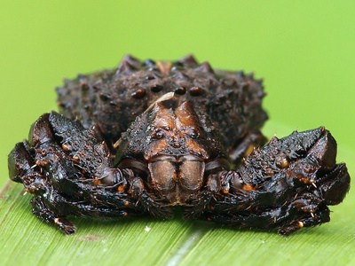
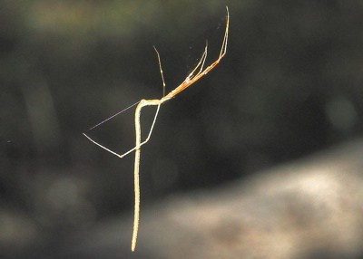
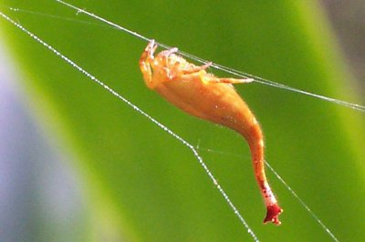
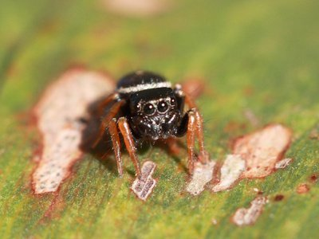
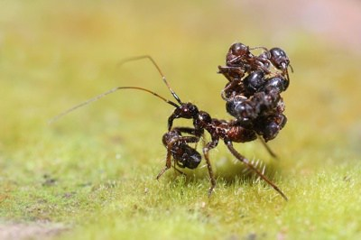
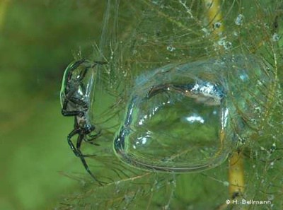
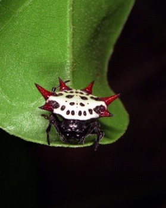
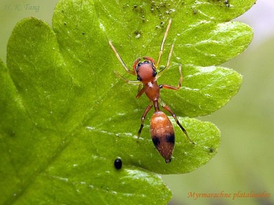
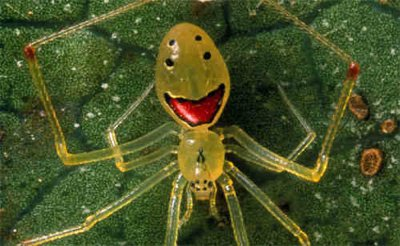

Welcome to Weird creatures!
There are many great and wonderful creatures on our little blue ball we call planet.
I have chosen 20 of them for this task.
May the gods be with us.
What are the arachnids?
Warning! If you are arachnophobic you may not want to see this list, but I really suggest that you do. You may find that these creatures are more diverse and fascinating than they are creepy. Spiders have never ceased to amaze me; they are among the most abundant predators in the world and have adapted to almost any imaginable habitat except for the sea, giving rise to countless species many of which remain unknown to science. If people would stop to watch spiders instead of simply squashing them on sight, I’m sure they would be amazed constantly. This list is only a very small selection of bizarre spiders from around the world.
Here is a video of a cute spider!
Look at this cute spider
What are the crustaceans?
Everyone is pretty well acquainted with crustaceans: arthropods who dominate the seas as heavily as their insect sisters rule the land. But the familiar crabs, lobsters, and shrimp are only a few examples of this order’s vastness and incredibly varied diversity. Crustaceans can be found in virtually every aquatic environment on earth, from the freezing Arctic to hostile toxic springs, and include a dizzying array of predators, scavengers, herbivores, and parasites.
Top 10 weirdest arachnids!
| 10 | |||
|  | The magnificent golden tortoise beetle�Charidotella sexpunctata� is commonly found in eastern North America and measures five to seven millimeters in length. The beetle has an extraordinary golden hue but it can change its color as well�transforming its outer covering so it becomes transparent. This color change reveals the rest of the beetle underneath, which is black with red spots, like a ladybug. Once these beetles are collected and removed from their natural habitats, they quickly lose their color, turning mud brown. This is because they lose their liquid layer, which is formed by dew on the leaves they live on. This liquid layer gives the illusion of a golden color. |
||
| 9 | |||
|  | Native to Australia is the super fast species of tiger beetle�Cicindela hudsoni� which is the fastest animal on the planet in relative terms. The beetle reaches speeds of up to 5.6 miles per hour or 2.5 meters per second. This is the equivalent of a human running at 480 miles per hour! At full speed, the beetle loses its sight so it has to run in small bursts when hunting prey. |
||
| 8 | |||
|  | A species endemic to North America, the asp caterpillar�Megalopyge opercularis �looks quite harmless. However, it should be treated with extreme caution as it has very powerful venom and is one of the most toxic caterpillars in North America. At the end of the fluffy hairs lie sharp, poisonous spines which pierce the skin and can cause extreme allergic reactions such as inflammation, blisters, headaches, nausea and breathing difficulties. These symptoms can last for days. |
||
| 7 | |||
|  | A species endemic to North America, the asp caterpillar�Megalopyge opercularis �looks quite harmless. However, it should be treated with extreme caution as it has very powerful venom and is one of the most toxic caterpillars in North America. At the end of the fluffy hairs lie sharp, poisonous spines which pierce the skin and can cause extreme allergic reactions such as inflammation, blisters, headaches, nausea and breathing difficulties. These symptoms can last for days. |
||
| 6 | |||
|  | The common scorpionfly�Panorpa communis�is native to western Europe and feeds on dead or dying insects, nectar and rotting fruit. They have also been observed stealing insects from spider�s webs. The flies tend to grow to around 25 millimeters in length with a wingspan of 35 millimeters. The back end that looks like a scorpion tale is actually the male fly�s over-sized genitals. The scorpionfly are known for their bizarre mating ritual where the female chooses its mate from the best gift that the males bring her. This is usually an insect or a mass of saliva. Although it looks pretty creepy, the scorpionfly and the �stinger� are totally harmless. |
||
| 5 | |||
|  | The tongue-eating louse�Cymothoa exigua�is one of the most disgusting parasites known to man. The louse is found in the Gulf of California and enters its host (the spotted rose snapper) through the fins. Several male lice enter the fish at once and then one of these will develop into a female. The female will then travel to the host�s mouth where it attaches to the base of the tongue. The organ�s blood supply is cut off, causing it to die and detach. |
||
| 4 | |||
|  | This remarkable looking creature is the giraffe weevil �Trachelophorus giraffa�which is native to the island of Madagascar. It was discovered in 2008 and grows to 25 millimeters in length. It has a black body with a red wing case. The bug gets its name from its extremely long neck that resembles a giraffe�s. Scientists believe that this is an adaptation for fighting and nest building. The neck of the male can be up to three times as long as female weevil�s. What is also interesting about the giraffe weevil is its egg-laying technique. The female will roll up a leaf, then lay one egg within it. It then cuts off the leaf roll from the remaining leaf to prepare the egg for hatching. The leaf provides both protection and a food supply for the young weevils. |
||
| 3 | |||
 |
The Cyanide millipede�Harpaphe haydeniana�is the chemist of the arthropod world. This millipede produces hydrogen cyanide (HCN) to hunt prey and to protect itself against any threats. This lethal substance has proved very effective and as a result of this adaptation, the millipede has very few natural predators.Storing HCN is extremely complex. If it is stored at room temperature, it could harm the millipede. So instead of storing this substance, the cyanide millipede stores two other chemicals, (mandelonitrile and benzoyl cyanide) in various segments of its body. When it needs to release the cyanide, chambers open and the different chemicals mix. The gas is ejected from millions of pores around the body at its prey or in defense against a predator. The millipede produces up to 0.6 milligrams of HCN, which can kill mice, predatory beetles and stun larger predators. |
||
| 2 | |||
|  | Giant water bugs�Kirkaldyia deyrolli�are mostly found in East Asia, Australia and the Americas. These bugs are some of the largest in the world (measuring up to fifteen centimeters long) and hunt small fish and amphibians. They are also known to consume snakes and turtles. They wait at the bottom of freshwater rivers and lakes for their prey. When a potential meal comes by, the giant water bug injects powerful digestive fluid into it so that the insides of the prey turn to liquid for easier ingestion. The bug has one of the most painful bites in the insect world. |
||
| 1 | |||
|  | The assassin bug�Reduviidae�has an awesome hunting technique in which it captures and consumes spiders by acting as their prey. It enters the unsuspecting arachnid�s web and starts to pluck the strings to mimic a bug or a fly. The spider then leaves its hiding place to retrieve its food. When it gets close, the assassin bug plunges its long, sharp snout into the creature�releasing a deadly venom which paralyzes it. This venom also starts to digest the spider so the assassin bug can drink the fluid inside�a process called extra-oral digestion (the giant water bug feeds in the same way). The bug�s behavior is known as aggressive mimicry. After feeding, the assassin bug wears the victim�s body as a sort of armor. It also places dead bugs on its back to confuse and scare potential predators. In the photo above, there are over twenty ants atop the creature. |
||